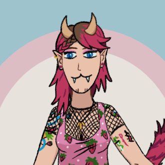
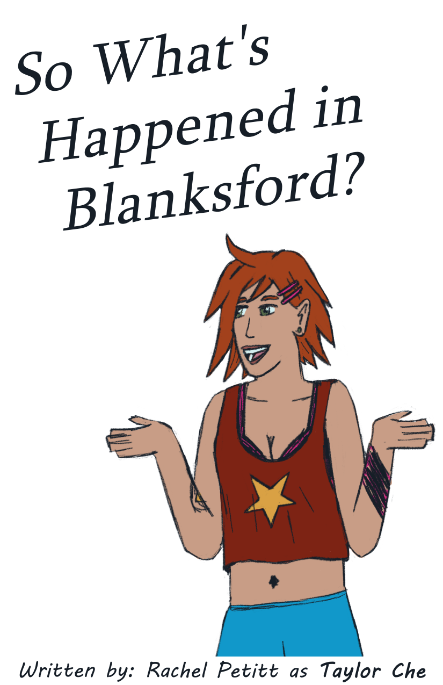

The Blanksford Project just started out as a bunch of OCs that I'd make art for. Eventually though, I introduced lore and more characters and after a lot of work it's become what it is now.

About the Blanksford Project
My Blanksford Comics

Blanksford Prologue Zine
This is the prologue of the Blanksford story delivered in a neat foldable zine format.
My Other Projects
I have plenty of other projects as well: Other stories that I'm writing that exist only as art right now, games I've made for fun with no expectations, and just other fun stuff.
My Games